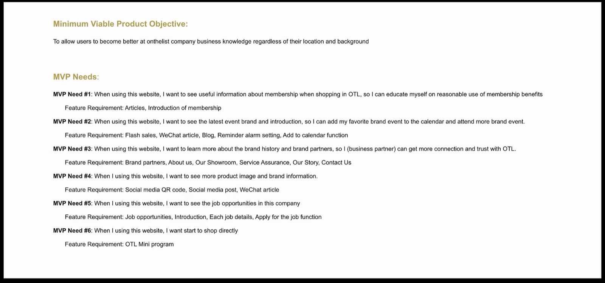
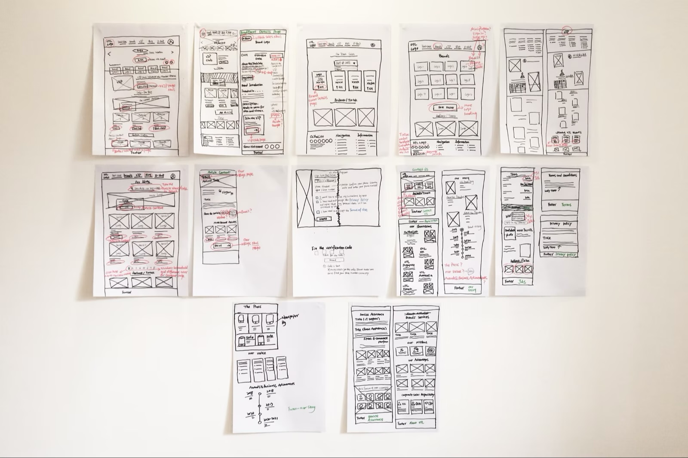
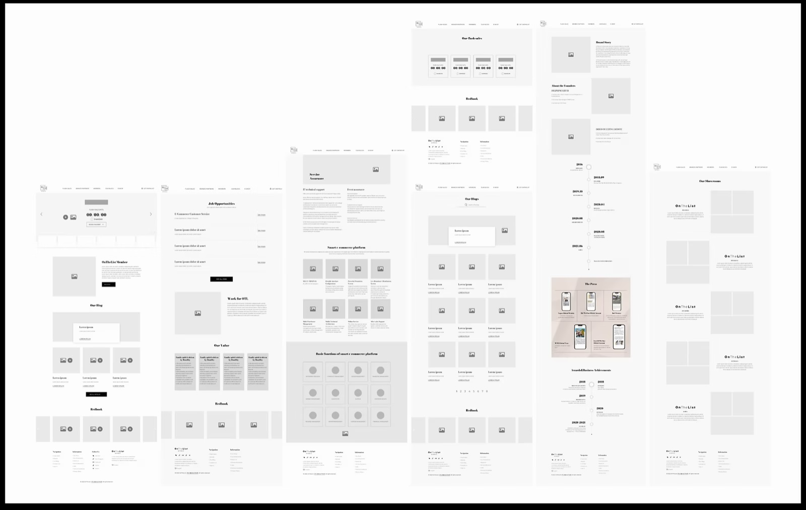
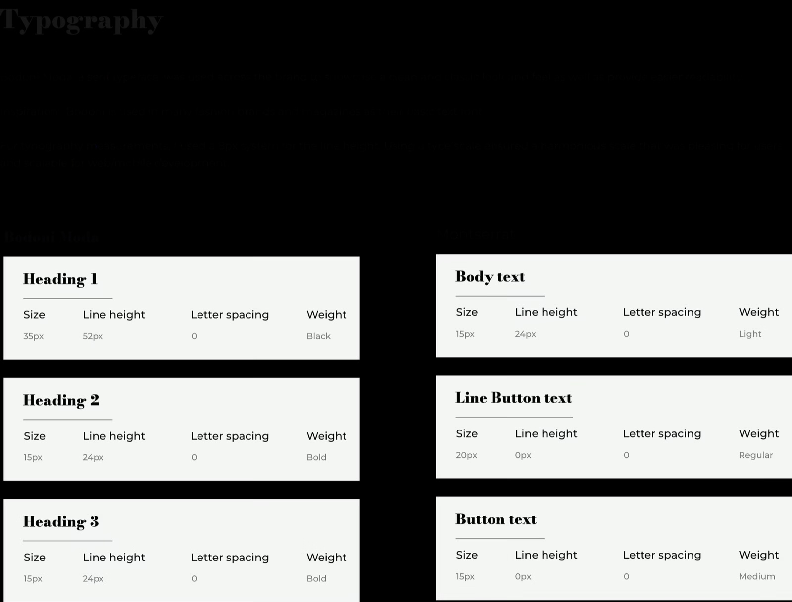
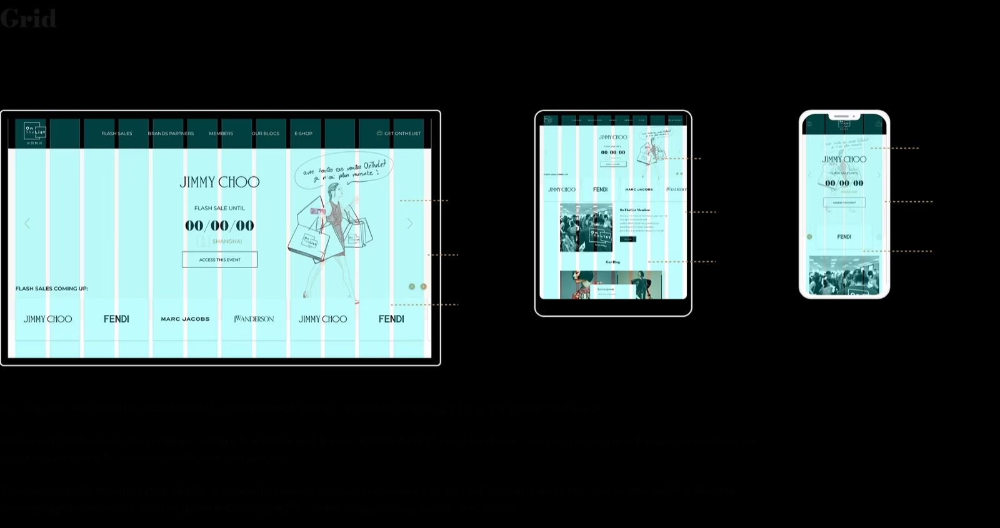

UI/UX Design, Visual Design
As the company's online and offline business continued to grow, building a closer connection with customers became increasingly important. To support this goal, the company aimed to establish a consistent brand image, promotional content structure, and functional experience across the official website, mobile platforms, and Mini Program.
The first step in my design process was to research similar fashion websites in the market. I analyzed competitors including Arlettie and Gucci to identify their strengths, design patterns, and potential opportunities for the OTL official website.

After completing the competitor analysis, I recruited and interviewed several users from social media who were interested in the OnTheList brand. The research helped me better understand their needs, motivations, and behaviors.
Based on the findings, I created user personas to define users' goals, pain points, and expectations more clearly.

Next, I gathered project requirements and defined the key features needed for the website. Based on the user personas, I developed key user stories and MVP features.
The MVP helped me quickly test initial design concepts with users, gather feedback early in the design process, and address usability concerns before moving into high-fidelity design.

The website structure included: Homepage, Latest Event Information, Member, Blog, Social Media, Sign In, and Footer with Company Introduction, Our Story, Our Showroom, Jobs, Terms and Conditions, Privacy Policy, Contact Us.

I created user flow diagrams to map out key journeys across the website, ensuring users could easily access event information, membership features, company content, and contact details.

Using the user personas, user flows, and MVPs as guidance, I sketched wireframes to explore different layout directions. After multiple iterations, I selected the concepts that best addressed the MVP goals and converted them into interactive prototypes in Adobe XD.

The prototype was developed to test the website structure, key interactions, and overall user journey before finalizing the visual design.

Using the prototype, I recruited potential users from social media to conduct remote moderated usability testing. During the sessions, users completed a series of tasks that helped me understand their thought process and evaluate whether the design met the MVP goals.
I also gathered feedback on users' likes, dislikes, and expectations, which informed further design refinements.

I developed a design system to ensure visual consistency across the website, mobile platforms, and Mini Program. This included typography, color usage, buttons, icons, layout rules, and reusable UI components.




The final design delivered a more professional brand image, clearer content structure, and smoother user experience across key business and customer touchpoints.